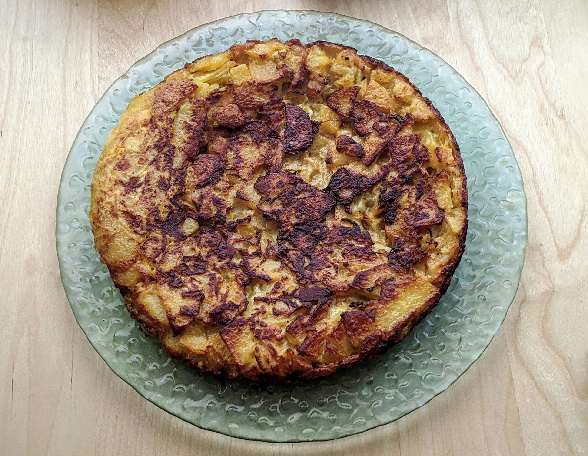

Omelette espagnole

Pour 5-6 personnes :
- 800g de patates
- Deux gros oignons
- Cinq œufs
- Un demi-litre d'huile d'olive (oui)
- Une bonne pincée de sel
- Éplucher les patates, les couper en demi-tranches pas trop épaisses.
- Verser l'huile dans une poêle, la faire chauffer à feu fort, et quand elle est chaude, y faire frire les patates cinq minutes environ en remuant régulièrement.
- Pendant ce temps, éplucher et couper les oignons en demi-tranches. Les rajouter dans la poêle et les faire frire au moins cinq minutes de plus.
- Pendant ce temps, battre les œufs dans un bol avec une bonne pincée de sel.
- Lorsque les patates commencent à dorer, les égoutter en récupérant l'huile, et les mélanger avec les œufs.
- Remettre une quantité généreuse d'huile dans la poêle (disons, 50mL, ou un peu plus), faire chauffer à feu assez for, et y verser le mélange. Égaliser et pousser un peu les bords avec une spatule.
- Lorsque les bords ont l'air solides, retourner l'omelette pour la faire cuire sur le dessus. C'est un peu technique: il faut recouvrir la poêle avec une grande assiette, retourner d'un coup l'omelette sur l'assiette (au-dessus de l'évier, au cas où un peu d'huile goutte), puis la faire glisser dans la poêle sans la casser. C'est une bonne idée de refaire chauffer un peu d'huile dans la poêle avant de faire ça.
- Lorsque ça a l'air solide, c'est prêt. On peu la manger une fois tiédie, ou à température ambiante.
Remarque : le reste d'huile peut être réutilisé pour faire frire d'autre trucs compatibles avec un léger goût d'oignons et de patates.